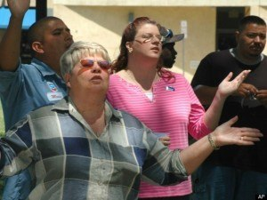
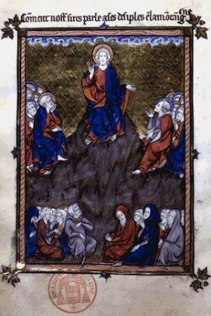
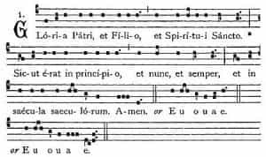
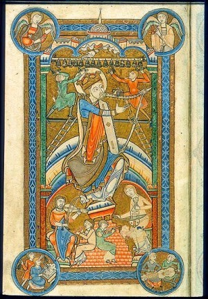
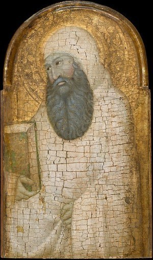
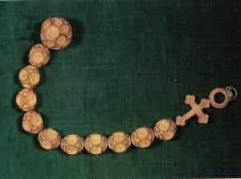

< < < Back
The 5 Most Perfect Prayers Of The Christian Tradition – Return Of Kings
We’ve seen the disposition necessary to prayer, and the essential content of prayer, in the last two articles. In this article, we will examine some common, prescribed prayers.
Many make the great mistake of assuming that “real” prayer is always spontaneous, because repeating set prayers must be monotonous, dead and superstitious. This is what I was taught after first converting to a form of Protestantism in my late teens. But I quickly noticed that our “living, spontaneous” prayers usually involved the same, repetitive content each time: we would hold hands or lift them up slightly and say, “Lord, we just wanna thank You, and we just wanna lift up Your Name, and we just wanna ask You to…” etc., etc. It was the same thing every time. If one is to be repetitive, repeat something that rewards repetition.

This is the error of thinking that spontaneity and “sincerity” are tantamount to goodness itself. It is a very womanish attitude, prevalent in modernity. Men have always known that repetition, symbol and ritual actually allow for a far greater depth of prayer and meaning; they often express profounder sentiments than “spontaneity” permits, and they often contain riches that only unfold through time and repetition.
This is why God commanded such things in the Old Testament, and why our Lord gave similar rites (Baptism, the Eucharist, etc.) and rote prayers (the Paternoster) to His disciples. Furthermore, in the natural periods of spiritual aridity, the endeavor to be “spontaneous and sincere” is exhausting. Rote prayers and rites allow us to give God His due, and to practice the virtue of perseverance in prayer, even when our soul can muster nothing of its own to think, feel or say. These are the five prayers you should know:
1. The Paternoster, or “Lord’s Prayer.”

The Lord taught this prayer, as recorded in Holy Scripture:
Our Father, Who art in heaven, hallowed be Thy name. Thy kingdom come, Thy will be done, on earth as it is in heaven. Give us this day our daily bread, and forgive us our debts, as we forgive our debtors. And lead us not into temptation, but deliver us from evil.
Fr. Garrigou Lagrange comments, that this prayer embodies the elements of prayer, even in their proper order, as explained in last week’s article. In humility, the soul acknowledges God as Father; it adores Him and hallows His name in Faith; it looks to the fulfilment of the Kingdom in Hope; it wishes to see His will done, in Charity; this Charity is effective, and seeks the provision of the means of salvation, and the removal of all interior and exterior obstacles. One can see that the prayer is perfect.
2. The Hail Mary
This prayer is also an exact quote from Holy Scripture:
Hail Mary, full of grace, the Lord is with thee; blessed art thou amongst women, and blessed is the Fruit of thy womb, Jesus.
This prayer expresses the central element of Christian Faith: Christ perfectly incarnate in the Virgin Mary, “who alone slayeth all heresies.” The most common heresy has been to take offense at the material world, and at the idea that God might become a part of it. St. John said that “many seducers are gone out into the world, who confess not that Jesus Christ is come in the flesh; this is a seducer and an antichrist.” All the major heresies have boiled down to this; but, repeating the words of the Archangel Gabriel and saint Elizabeth, we affirm the Lord has come in the flesh by greeting the source of His humanity. We also fulfil the Biblical prophecy: “from henceforth, all generations shall call me blessed,” as the Virgin declared under the inspiration of the Holy Ghost.
In the late Middle Ages the prayer was expanded, affirming the defense of Mary’s truly divine maternity from the Council of Ephesus (that the Virgin is “Mother of God,” insofar as she is mother of Jesus Christ, Who is God). It continues: “Holy Mary, Mother of God, pray for us sinners, now and at the hour of our death. Amen.” I use the shorter or longer form for different applications.
3. The Doxology

This is the common form of blessing the Trinity. The Eastern form is: “Glory be to the Father and Son and Holy Ghost, now and ever, and unto ages of ages, amen.” The Western form is: “Glory be to the Father and Son and Holy Ghost, as it was in the beginning, is now and ever shall be, unto ages of ages, amen.”
4. The Creed

In the East, the Nicaeo-Constantinopolitan is practically the only Creed used; by the time this Creed was composed, the West already had the Apostles’ Creed in widespread use, and it remains dominant, outside of Mass. It expresses faith in the major points of Christian doctrine; I will put a link to it, and other prayers, below.
The Christian who prays with the above four prayers, affirms the great truths of the Faith; with good reason, these have always been the prayers that even the laity knew and used in their daily prayers with the greatest frequency. With meditation and attentive repetition, their richness increases.
5. The Psalter

The book of Psalms is the essential prayer of the Church. Informally, the first monks and ascetics prayed the Psalter all day long; having memorized all 150 Psalms, they would pray them in order through the day. From this, arose the most common and efficacious forms of the Church’s formal prayer: the Office, Lectio Divina, the Rosary, and a form of constant prayer, sometimes called “ejaculatory” (meaning “thrown forth like darts”).
After early monks ceased memorizing and praying the whole Psalter every day, they still used the Psalter constantly. In the Divine Office, they apportioned the Psalter out over the week, praying the Psalms eight times a day in set arrangements with hymns, antiphons, responsories, Scripture readings, Patristic homilies and prayers. If there is enough interest, I will write an article on how to pray the Office, and put it up on the hermitage’s webpage.
They also read the Psalter slowly, meditating closely on each verse. I quote the brief rule of St. Romuald in its entirety:
Sit in your cell as in paradise. Put the whole world behind you and forget it. Watch your thoughts like a good fisherman watching for fish. The path you must follow is in the Psalms; never stray from it. If you have just come to the monastery, and in spite of your good will you cannot accomplish what you want, take every opportunity you can to sing the Psalms in your heart and to understand them with your mind. And if your mind wanders as you read, do not give up; hurry back and apply your mind to the words once more. Realize above all that you are in God’s presence, and stand there with the attitude of one who stands before the emperor. Empty yourself completely and sit waiting, content with the grace of God, like the chick who tastes nothing and eats nothing but what his mother brings him.
This method, called Lectio Divina, came also to be applied to any kind of spiritual reading; but, preeminently the Psalms.
When away from the Psalter, they would repeat verses from it. From antiquity, the great prayer of all aspiring souls, has been the opening of Psalm 69: “Incline unto mine aid, O God; O Lord, hasten to help me.” This was the prayer of the desert fathers, which Abba Isaac taught St. John Cassian to repeat at all times; St. Benedict added it to the Monastic Office, and Pope St. Gregory the Great (aka Dialogist) added it to every hour of the Roman Office. It was prayed constantly, and recommended so to be prayed, by such saints as: Patrick, Cassiodorus, Brendan, Bathan, Columkille, Maelruain (who prescribed that this was the only prayer someone should dare to say in the toilet), Phillip Neri, Robert Bellarmine, Francis de Sales, Vincent de Paul, Alphonse Liguori, and many others. And now, you know how to walk in the path of the greats, too.
Finally, there is the Rosary. Originally 150 beads in length, the Rosary was a way for illiterate persons to imitate the monks’ recital of all 150 Psalms, replacing each Psalm with the Lord’s Prayer. In response to the Albigensian heresy, the Church looked to the Virgin Mary as “destroyer of heresies,” and conformed the Rosary closely to the Divine Office.

Tradition viewed the Psalter as a foreshadowing of Christ, so the Hail Mary (greeting Christ Incarnate) replaced the Paternoster for the 150 beads. The Divine Office explains the meaning of the great Feasts in its texts, so the Rosary took to meditating on these once for every ten beads. Finally, the usual method of beginning and ending the Divine Office came to be used for the Rosary, too (and is still used by those who pray the Rosary in the Dominican manner, explained here).
The Apostles’ Creed, from above, and many other concise, Catholic prayers, in English and Latin texts, can be found here.
ROK isn’t really the proper forum, to give detailed instructions on the methods of applying and praying these prayers. This week, I will put up an article on the Hermitage’s website, containing a shorter and a longer prayer rule, that could be used by beginners or near-beginners. If there is interest, I’ll also explain how to pray the Divine Office, there.
I did want to get through some of the basics of Christian prayer, however, because I figured some men may be wanting to keep Lent (or keep it well) for the first time—prayer is the most important element of that. Along those lines: today is Ash Wednesday! Make a good confession so that you can begin the Great Fast on Wednesday. More details about Lenten customs are here. You’re looking for Shrovetide and Lent, at the moment.
As always, I’m Catholic and write from that perspective, believing it to be true; but other traditions can see how some of the concepts apply to them. By mastering the basic prayers of one’s tradition, he is formed in the spirit and beliefs of the same, and is sure to find that there is more to the prayers than first meets the eye. One should not disdain to use formal, rote prayers for this reason, but should take advantage of their ability to form us in this way, and to induce prayer even in periods of spiritual aridity.
Next week I will probably write on the topic of Lent; then I will conclude this series on prayer, with a look at contemplative practices.
Read More: Atheists Are Fatties